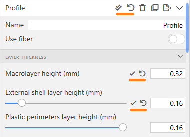
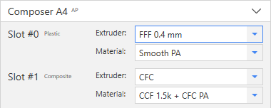

Changes in Aura Projects and Temporary Settings
When you open a project, the settings contained in it are no longer automatically saved to the settings library, but imported as temporary. Temporary settings can be used for slicing in the same way as settings from the library, but they will be cleared when creating a new project, opening another project, or restarting the program.
Temporary settings are always displayed at the beginning of the list of settings on the corresponding panel (printers, materials, profiles). Temporary settings can be saved to the library by clicking on the save button. In this case, the custom settings from the project will be added to the library, and the overrides for the settings built into Aura will be overwritten.

Settings Overrides
Each parameter in the settings for materials, profiles, printers can now be overridden, reset, and saved. When a parameter is changed, it becomes overridden. Slicing uses overridden parameters. Overrides are saved across program restart.
All settings can be overridden, including the settings built into the Aura, which are marked with the AP index. The overridden value can be reset to the original (base) value. Also, if the settings are custom (without the AP index), then the overridden parameter values can be saved updating the base ones.
Compatible Materials in Profiles
For profiles, the ability to specify materials compatible with them (plastics and composites) has been added. Also, the profile can be universal - compatible with any materials. In the Slicing panel, the profiles list displays only those profiles that are compatible with the selected materials. All profiles from Aura 1.x are imported as universal.

Composite Settings
Fiber settings were replaced with composite settings. Composite is a combination of fiber and plastic. Composite settings include all the plastic settings that are used in composite printing, for example, print temperature, cooling fan speed, etc. When importing an Aura 1.x project, a composite is created automatically for a combination of fiber and plastic in a composite extruder. When importing fiber settings from Aura 1.x separately, all settings related to the plastic are set to their default values.
Slots and Extruders in Printers
Each printer now has a list of extruder slots and a list of extruders that can be installed in the slots. Before slicing, on the Slicing panel, you can select which extruders are installed in the slots. The tool index and type (plastic, composite or universal) are specified for the slot.
Composer A4, A3 printers have 2 slots - slot 0 (plastic) and slot 1 (composite). Slot 0 can accommodate plastic extruders with different nozzle diameters. Only one composite extruder is currently available for slot 1. The PROM IS 500 printer has 4 universal slots, in which different extruders can be installed.
New Project and Settings File Formats
The new project file format has the .auprojx extension. Projects of the old format (.auproj) can be opened in the new version of Aura, but the project can only be saved in the new format. Settings files (materials, profiles, printers) also have a new format. Old format settings can be imported, settings can only be exported to a new format. An Aura.OPEN license is required to open old projects and settings.
Licensing System
Added licensing system including 3 levels of licenses corresponding to Desktop Anisoprinting packages (NEAT, EXT, OPEN).
Other Changes
- Plastic extruders with 0.6 mm nozzle diameter have been added to Composer A4, A3 printers.
- Added "manufacturer" field to material settings.
- Added the ability to collapse groups of settings in printers, materials and profiles.
- The settings for the internal structure of a part, which were previously only available in the Slicing panel, can now be edited in the profile settings (Profiles panel).
- Confirmation is now requested when deleting printers, profiles and materials from the library.
- When selecting extruders for printing various entities (outer shell, filling, etc.), the list now displays not the tool index, but the name of the extruder and the material installed in it.
- The names of printers, profiles, materials no longer have to be unique, the main identifier of the settings is now id, not the name.
- Changed captions for settings that were previously marked as (Developer).
- Plastic consumption is now displayed in grams and cubic centimeters instead of grams and meters.